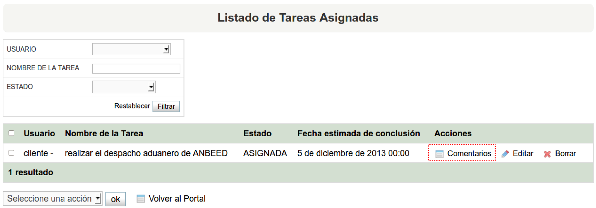
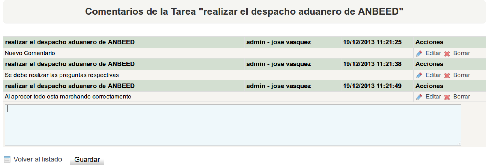
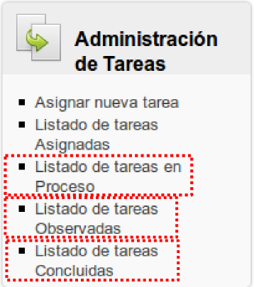

Esta sección esta relacionada a la administración de las tareas asignadas a los usuarios; es decir, los usuarios regulares ingresan a esta opción para ver las tareas asignadas a éste. El usuario tiene el listado de las tareas en sus diferentes estados.
4.3.1. Listado de tareas Asignadas
Figura 4.9. Tareas Asignadas
En esta sección el usuario podrá listar las tareas asigandas y sus respectivos comentarios; es decir sigue la misma lógica del punto 4.1. El usuario que fue asignado a una respectiva tarea será el único con permisos de cambiar su estado.

Figura 4.10. Tareas Asignadas

Figura 4.11. Comentarios
Tareas en Progreso, Observadas y Concluidas
El listado de Tareas en Progreso, Observadas y Concluidas el procedimiento es el mismo que la anterior sección: Listado de Tareas Asignadas, por lo que para listar o comentar alguna tarea de las listas de los estado ya mencionados seguimos el mismo proceder de la sección anterior.

Figura 4.12. Tareas en Progreso, Observadas y Concluidas